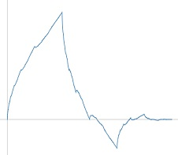
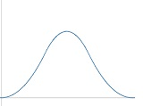
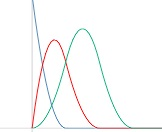

Der linke Teil des Ganzen
There are many possibilities to divide wavelets into different families. We decided
to classify them by their construction. You find more information about that classification in
WaveletDokumentation.pdf.
At the moment we present the following families:

OMRA-Wavelets
Here we collect the scaling-functions with compact support which generate a orthonormal multi-range analysis and the corresponding wavelets. Famous member of this family are Daubechies-wavelets, Coiflets, Symmlets.
BiOMRA-Wavelets
Here we collect the scaling-functions with compact support which generate a primal multi-range analysis and a biorthogonal dual mulit-range analysis. Famous member of this family are the Spline-Wavelets, first constructed by Cohen, Daubechies, Feauveau.
BiOMRAI-Wavelets
Here we collect the scaling-functions with compact support which generate a primal multi-range analysis and a biorthogonal dual mulit-range analysis on an Intervall. Famous member of this family are the wavelets constructed by Dahmen, Kunoth, Urban or by Primbs.